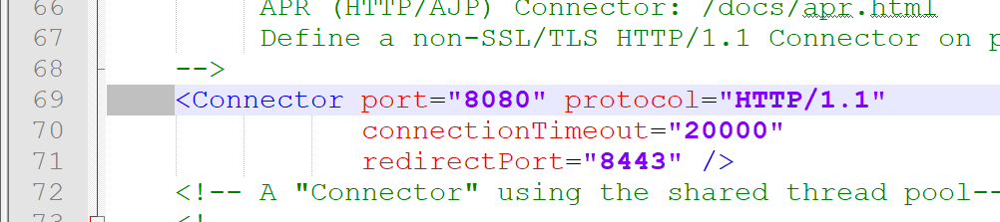
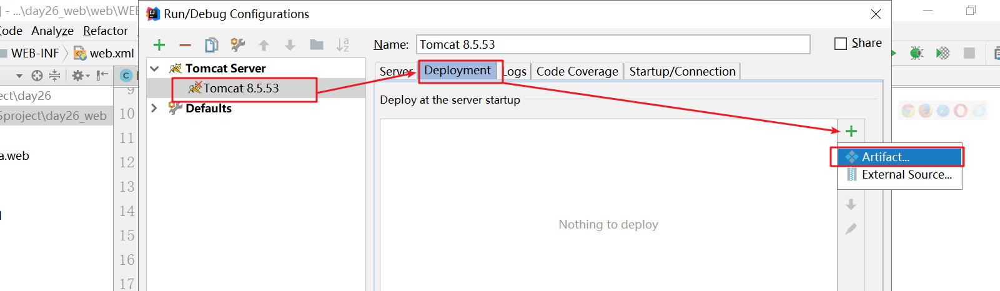

学习目标
1、能够理解WEB服务器
2、能够运用Tomcat服务器部署WEB项目
3、能够使用idea配置Tomcat服务器
4、能够使用idea编写servlet
5、能够说出servlet生命周期方法执行流程
6、能够说出servlet运行原理
学习内容
1、软件的架构：BS和CS
目标
- 什么是BS
- 什么是CS
BS和CS概述
- CS（Client/Server）：客户端服务器模式
- BS（Browser/Server）：浏览器服务器模式
CS特点
软件
本地电脑上要安装客户端，使用的时候必须要访问服务器。
大型游戏
CS结构软件的特点
- 客户使用的时候需要安装客户端
- 版本升级的时候客户需要下载更新包
- 程序员需要开发客户端与服务端两边。
- 减轻服务端的压力, 对带宽要求比较小.
BS特点
企业管理软件
BS结构的特点：
- 客户不需要安装客户端，只要有浏览器即可
- 版本升级的时候客户不需要下载更新包，直接使用浏览器访问即可
- 程序员需要服务端。
- 增大服务端的压力, 对带宽要求比较高.
小结
什么是BS？
- 浏览器服务器模型
什么是CS？
- 客户端与服务器模型
未来bs结构的软件会取代cs结构软件，web结构的软件我们也称作为web资源。
2、Web资源的分类：静态和动态
目标
Web资源分成哪两类
分类依据
Web资源分成2类：
静态资源
动态资源
静态网站的特点：
资源是由浏览器直接解析
==数据是写死网页上的， 不是读取数据库或者是其他的文件而来，如果需要==
==修改页面的数据，需要修改源代码。 静态网页的技术： html、css、javascript、 …==
动态网站的特点：
- 资源是运行在服务器，由服务器负责解析运行动态web资源
- 动态web资源的数据是读取数据库或者是其他的文件得来的，如果需要修改页面的数据，==直接修改数据库的数据即可不需要修改源码==。， 动态web资源的技术： servlet、php、python….
小结
Web资源分成哪两类？
- 静态web资源 , html,css\js\img
- 动态web资源, servlet
web资源是可以提供给外界去访问的。 如果一个web资源需要提供给外界去访问，那么就必须要有一个服务器的存在。
3、什么是Web服务器
目标
什么是Web服务器
什么是Web服务器
- ==本身是一个软件，任何计算机只要安装了服务器的软件， 都可以称作为服务器。== 也称为Web容器，我们写的程序是运行在Web容器中。
- 容器中：
- 共享资源(图片，网页)，将服务器上资源分享给浏览器。
- 程序，解析我们写的Java程序
- 处理用户发送的请求，并且对请求做出响应。把生成的结果以网页的方式显示在浏览器上。
服务器的作用
- 服务器的作用：服务器的作用就是可以把服务器本地的资源提供给外界去访问。
JavaEE规范
Java分为三个部分：
- JavaSE 标准版的Java，开发一些客户端的程序，桌面应用程序。JavaTM Platform Standard Edition
- JavaEE 企业版的Java，开发运行在服务器上程序，必须以JavaSE为基础。Enterprise Edition
- JavaME 用于嵌入式开发
在Java中所有的服务器厂商都要实现一组Oracle公司规定的接口，这些接口是称为JavaEE规范。
不同厂商的JavaWeb服务器都实现了这些接口，==在JavaEE中一共有13种规范。实现的规范越多，功能越强==。
常见的Web服务器
WebLogic
WebLogic是Oracle公司的产品，是目前应用最广泛的Web服务器，支持J2EE规范。WebLogic最早由 WebLogic Inc. 开发，后并入BEA 公司，最终BEA公司又并入 Oracle公司。BEA WebLogic是用于开发、集成、集群、部署和管理大型分布式Web应用、网络应用和数据库应用的Java应用服务器。
WebSphere
另一个常用的Web服务器是IBM公司的WebSphere，支持JavaEE规范。
其它中小型服务器
今天主角：Tomcat
在小型的应用系统或7可以使用一个免费的Web服务器：Tomcat。支持的规范：该服务器支持全部JSP以及Servlet规范。
小结
Web服务器是什么？
- web服务器就是一个软件， 任何一台机器安装了服务器软件都是服务器
说出三个常用的Web服务器
weblogic
WebSphere
tomcat
glass fish
jboss
resin
jetty
3、案例：自己模拟一个Tomcat[了解]
目标
使用多线程和Socket模拟一个简单的Web服务器，将服务器上的资源共享给浏览器
原理图
实现的功能：将服务器上HTML资源共享给浏览器。功能有限，只能通过IE浏览器来访问Web容器。
使用到技术点：
- 多线程
- Socket网络编程
- IO流文件操作
package com.itheima.tomcat;
import java.io.FileInputStream;
import java.io.IOException;
import java.io.OutputStream;
import java.net.ServerSocket;
import java.net.Socket;
/*
需求： 使用java代码模拟tomcat服务器把本地的图片发送给浏览器
*/
public class MyTomcat implements Runnable {
private Socket socket;
public MyTomcat(Socket socket) {
this.socket = socket;
}
@Override
public void run() {
FileInputStream fileInputStream = null;
try {
//1. 得到scoket的输出流
OutputStream outputStream = socket.getOutputStream();
//2. 得到图片的输入流
fileInputStream = new FileInputStream("H:/美女/1.jpg");
byte[] buf = new byte[1024];
int length = 0;
//3. 边读边写
while((length=fileInputStream.read(buf))!=-1){
outputStream.write(buf,0,length);
}
System.out.println("====已经给客户端传输数据完毕====");
} catch (IOException e) {
e.printStackTrace();
} finally {
try {
//4. 关闭资源
fileInputStream.close();
socket.close();
} catch (IOException e) {
e.printStackTrace();
}
}
}
public static void main(String[] args) throws IOException {
ServerSocket serverSocket = new ServerSocket(8080);
while(true){
//有客户端请求过来
Socket socket = serverSocket.accept();
//开启一个线程服务该客户
new Thread(new MyTomcat(socket)).start();
}
}
}
==该案例的重点： 让同学们清楚服务器与浏览器之间的数据传输是基于TCP协议的==
小结
以后我们需要自己编写Web服务器吗？
- 不需要，因为市场上有大量非常成熟的服务器，没必要自己写。
服务器的运行原理是什么？
- 是基于TCP协议进行数据传输的。
4、Tomcat的安装、配置
目标
- tomcat的安装
- 环境变量的配置
下载页面
tomcat的产品页面： http://tomcat.apache.org/
安装
直接解压到任何一目录就可以安装
- 目录层次不要太深
- ==目录中不要出现汉字、空格==
环境变量的配置（没有特殊情况不需要配置,有特殊情况也不要配置找老师）
我们使用的时候我们从来都没有配置catalina_home， catalina_home配置的是tomcat的主目录， 如果你们的tomcat实在没法启动，那么可以尝试配置。 否则不需要管。==这个环境变量一旦配置上来 ，你们的tomcat假设在电脑上有多个，也只会运行catalina_home指向的tomcat。==
类似于JDK的配置
添加Tomcat的安装目录
配置Path，可以在任何路径下访问bin文件夹的可执行文件
小结
- tomcat如何安装
- 解压即可，解压的路径不要有中文或者空格
5、Tomcat的启动与关闭
目标
- 启动与关闭tomcat的命令
- Tomcat每个目录的作用
启动与关闭命令
- 启动的命令：startup.bat(==这个命令在tomcat解压目录bin目录==)

在浏览器端输入localhost:8080,如果可以看到tomcat的主页，即是成功
关闭的命令：shutdown.bat(这个命令在tomcat解压目录bin目录)
==一旦关闭服务器的时候，我们再访问localhost：8080，就会出现以下界面==
Tomcat的目录结构
| 目录名 | 作用 |
|---|---|
| bin | tomcat可执行文件所在目录，启动和关闭都在这个目录下 |
| conf | 配置文件所在的目录：server.xml 服务器的配置文件, web.xml 所有模块的描述文件 |
| lib | tomcat正常运行必须的jar包 |
| logs | 服务器的日志记录 |
| temp | 临时目录，可以删除其中的文件 |
| webapps | 项目部署的目录 |
| ROOT目录：默认打开的管理页面 | |
| work | 用于存储jsp的翻译文件的 |
小结
tomcat的启动和关闭的命令是什么？
- startup.bat
- shutdown.bat或者X
tomcat需要大家关注目录？
- bin 存放tomcat启动与关闭名
- conf 存放tomcat配置文件的
- log 查看tomcat的日志
- webapps 存放对外发布的资源
- work 存放jsp的翻译文件
6、Tomcat启动时常见的问题
目标
启动时常见的两个问题
问题1：一闪而过
由于tomcat服务器是java语言去编写的，所以运行的时候需要依赖java的运行环境，所以要求配置==JAVA_HOME==环境变量。
问题2：端口号被占用
解决方案一： 杀死进程解决
启动端口查看器， 找到占用指定端口号的程序,再把它kill
- 杀死占用该端口的程序
方案二： 修改tomcat使用的端口号即可
- 找到tomcat的安装目录的conf目录的server.xml文件在第69行修改

小结
常见的问题有哪两个？如何解决？
- 闪退， 没有配置JAVA_HOME环境变量
- 端口被占用
- 方案一： 弄死占用的进程
- 方案二：修改tomcat自己占用端口
7、Tomcat项目发布的三种方式
目标
tomcat项目发布的三种方式
发布方式1：把要发布的资源复制到webapps
操作方法
- 直接将项目复制到webapps目录下

采用压缩文件.war的方式
- 将整个项目使用压缩工具打包成一个zip文件
- 改zip的扩展名为war
- 复制到webapps目录下，tomcat会自动解压成一个同名的目录。
弊端：
- 所有的文件都放入到webapps目录，一旦文件过多就会效率低。 一个文件夹建议不要超过1000个文件，如果一旦超过1000个文件的时候效率就会低。
==注意： 发布到webapps目录的资源一定要有文件夹。==
发布方式2：虚拟目录
配置方式
server.xml中host元素下
优点：不需要将项目复制到webapps
步骤：
- 找到tomcat目录下面conf目录的server.xml文件
- 在host标签里面添加一个Context标签指定目录与访问的地址即可。
代码
<?xml version="1.0" encoding="UTF-8"?>
<!--
Licensed to the Apache Software Foundation (ASF) under one or more
contributor license agreements. See the NOTICE file distributed with
this work for additional information regarding copyright ownership.
The ASF licenses this file to You under the Apache License, Version 2.0
(the "License"); you may not use this file except in compliance with
the License. You may obtain a copy of the License at
http://www.apache.org/licenses/LICENSE-2.0
Unless required by applicable law or agreed to in writing, software
distributed under the License is distributed on an "AS IS" BASIS,
WITHOUT WARRANTIES OR CONDITIONS OF ANY KIND, either express or implied.
See the License for the specific language governing permissions and
limitations under the License.
-->
<!-- Note: A "Server" is not itself a "Container", so you may not
define subcomponents such as "Valves" at this level.
Documentation at /docs/config/server.html
-->
<Server port="8005" shutdown="SHUTDOWN">
<Listener className="org.apache.catalina.startup.VersionLoggerListener" />
<!-- Security listener. Documentation at /docs/config/listeners.html
<Listener className="org.apache.catalina.security.SecurityListener" />
-->
<!--APR library loader. Documentation at /docs/apr.html -->
<Listener className="org.apache.catalina.core.AprLifecycleListener" SSLEngine="on" />
<!-- Prevent memory leaks due to use of particular java/javax APIs-->
<Listener className="org.apache.catalina.core.JreMemoryLeakPreventionListener" />
<Listener className="org.apache.catalina.mbeans.GlobalResourcesLifecycleListener" />
<Listener className="org.apache.catalina.core.ThreadLocalLeakPreventionListener" />
<!-- Global JNDI resources
Documentation at /docs/jndi-resources-howto.html
-->
<GlobalNamingResources>
<!-- Editable user database that can also be used by
UserDatabaseRealm to authenticate users
-->
<Resource name="UserDatabase" auth="Container"
type="org.apache.catalina.UserDatabase"
description="User database that can be updated and saved"
factory="org.apache.catalina.users.MemoryUserDatabaseFactory"
pathname="conf/tomcat-users.xml" />
</GlobalNamingResources>
<!-- A "Service" is a collection of one or more "Connectors" that share
a single "Container" Note: A "Service" is not itself a "Container",
so you may not define subcomponents such as "Valves" at this level.
Documentation at /docs/config/service.html
-->
<Service name="Catalina">
<!--The connectors can use a shared executor, you can define one or more named thread pools-->
<!--
<Executor name="tomcatThreadPool" namePrefix="catalina-exec-"
maxThreads="150" minSpareThreads="4"/>
-->
<!-- A "Connector" represents an endpoint by which requests are received
and responses are returned. Documentation at :
Java HTTP Connector: /docs/config/http.html
Java AJP Connector: /docs/config/ajp.html
APR (HTTP/AJP) Connector: /docs/apr.html
Define a non-SSL/TLS HTTP/1.1 Connector on port 8080
-->
<Connector port="8080" protocol="HTTP/1.1"
connectionTimeout="20000"
redirectPort="8443" />
<!-- A "Connector" using the shared thread pool-->
<!--
<Connector executor="tomcatThreadPool"
port="8080" protocol="HTTP/1.1"
connectionTimeout="20000"
redirectPort="8443" />
-->
<!-- Define a SSL/TLS HTTP/1.1 Connector on port 8443
This connector uses the NIO implementation with the JSSE engine. When
using the JSSE engine, the JSSE configuration attributes must be used.
-->
<!--
<Connector port="8443" protocol="org.apache.coyote.http11.Http11NioProtocol"
maxThreads="150" SSLEnabled="true">
<SSLHostConfig>
<Certificate certificateKeystoreFile="conf/localhost-rsa.jks"
type="RSA" />
</SSLHostConfig>
</Connector>
-->
<!-- Define a SSL/TLS HTTP/1.1 Connector on port 8443 with HTTP/2
This connector uses the APR/native implementation. When using the
APR/native implementation or the OpenSSL engine with NIO or NIO2 then
the OpenSSL configuration attributes must be used.
-->
<!--
<Connector port="8443" protocol="org.apache.coyote.http11.Http11AprProtocol"
maxThreads="150" SSLEnabled="true" >
<UpgradeProtocol className="org.apache.coyote.http2.Http2Protocol" />
<SSLHostConfig>
<Certificate certificateKeyFile="conf/localhost-rsa-key.pem"
certificateFile="conf/localhost-rsa-cert.pem"
certificateChainFile="conf/localhost-rsa-chain.pem"
type="RSA" />
</SSLHostConfig>
</Connector>
-->
<!-- Define an AJP 1.3 Connector on port 8009 -->
<Connector port="8009" protocol="AJP/1.3" redirectPort="8443" />
<!-- An Engine represents the entry point (within Catalina) that processes
every request. The Engine implementation for Tomcat stand alone
analyzes the HTTP headers included with the request, and passes them
on to the appropriate Host (virtual host).
Documentation at /docs/config/engine.html -->
<!-- You should set jvmRoute to support load-balancing via AJP ie :
<Engine name="Catalina" defaultHost="localhost" jvmRoute="jvm1">
-->
<Engine name="Catalina" defaultHost="localhost">
<!--For clustering, please take a look at documentation at:
/docs/cluster-howto.html (simple how to)
/docs/config/cluster.html (reference documentation) -->
<!--
<Cluster className="org.apache.catalina.ha.tcp.SimpleTcpCluster"/>
-->
<!-- Use the LockOutRealm to prevent attempts to guess user passwords
via a brute-force attack -->
<Realm className="org.apache.catalina.realm.LockOutRealm">
<!-- This Realm uses the UserDatabase configured in the global JNDI
resources under the key "UserDatabase". Any edits
that are performed against this UserDatabase are immediately
available for use by the Realm. -->
<Realm className="org.apache.catalina.realm.UserDatabaseRealm"
resourceName="UserDatabase"/>
</Realm>
<Host name="localhost" appBase="webapps"
unpackWARs="true" autoDeploy="true">
<!--
path ： 浏览器访问的路径， 注意：该路径一定要/开头
docBase: 资源文件所在的路径
-->
<Context path="/aa" docBase="H:\heima"/>
<!-- SingleSignOn valve, share authentication between web applications
Documentation at: /docs/config/valve.html -->
<!--
<Valve className="org.apache.catalina.authenticator.SingleSignOn" />
-->
<!-- Access log processes all example.
Documentation at: /docs/config/valve.html
Note: The pattern used is equivalent to using pattern="common" -->
<Valve className="org.apache.catalina.valves.AccessLogValve" directory="logs"
prefix="localhost_access_log" suffix=".txt"
pattern="%h %l %u %t "%r" %s %b" />
</Host>
</Engine>
</Service>
</Server>
浏览器上测试
缺点
- 不支持热加载, ==热加载就是指发布新资源的时候不需要重启服务器==,目前发布新资源的时候是需要重启服务器的。
发布方式3：虚拟路径的发布方式，独立的XML文件(推荐使用，idea使用的就是这种方式)
在tomcat/conf/catalina/localhost中创建xml配置文件
如果xml文件的名称假设为：hello.xml，文件的名称就相当于path路径
该文件的文件名就是相当于path路径， 添加xml文件的内容为

<Context docBase="H:/heima"/>小结
部署项目的方式
- 方式一： 把要发布的资源放入到webapps目录
- 方式二： 在conf目录下面server.xml文件上添加
- 方式三： 在conf/catalina/localhost下面创建一个独立xml文件
8、在idea中配置Tomcat
目标
- 在idea中创建一个静态网站
- 配置tomcat，部署静态网站运行
idea中配置tomcat
我们要将idea和tomcat集成到一起，可以通过idea就控制tomcat的启动和关闭
编辑运行配置
添加Tomcat的配置服务器信息

注：如果看不到Tomcat Server，点下面的33 items more
配置服务器的详细信息

在idea中启动服务器
点右上角的启动图标，启动Tomcat服务器

控制台显示服务器启动的状态信息
小结
如果要调试Servlet程序，需要运行在什么模式下？
9、Servlet2.5创建第1个Servlet
目标
使用web.xml配置方式编写第1个Servlet
Tomcat与Servlet的关系
Servlet由我们编写
Tomcat由第三方厂商写好的，我们的程序运行在Tomcat中。
Tomcat运行在Java的虚拟机中
Servlet与普通的Java程序的区别
- Servlet本质上就是一个Java类
- 所有的Servlet必须要实现javax.servlet.Servlet接口
- servlet程序运行在Tomcat容器中
- ==用于接收浏览器的请求参数，并且做出响应(可以给浏览器输出数据)==。
编写Servlet的步骤
- 创建一个类实现了Servlet接口
- 实现servlet接口的所有方法，把响应内容编写在service方法中
- 配置web/WEB-INF/web.xml文件，配置servlet的访问地址
步骤
创建web模块
通常web结构如下
如果WEB-INF下没有web.xml，在idea使用以下方法添加web.xml。(注：要加web目录)

注：如果直6.接在浏览器上输入地址访问Servlet，它调用的是doGet方法
package com.itheima.web;
/*
边写servlet的步骤：
1. 创建一个类实现了Servlet接口
2. 实现servlet接口的所有方法，把响应内容编写在service方法中
3. 配置web/WEB-INF/web.xml文件，配置servlet的访问地址
*/
import javax.servlet.*;
import java.io.IOException;
import java.io.PrintWriter;
public class Demo1Servlet implements Servlet {
/*
request： 请求，浏览器的所有的请求信息都在request中。比如 : 注册时候填写用户名、密码..
response： 服务器给浏览器的响应信息，响应信息就是服务器给浏览器的信息就是响应信息。
*/
@Override
public void service(ServletRequest request, ServletResponse response) throws ServletException, IOException {
//需求： 向浏览器输出一段话，请问使用request，repsonse/
//解决响应信息的乱码问题
response.setContentType("text/html;charset=utf-8");// 这句话目前同学们照抄不需要理解，后面会讲解
//获取到向浏览器输出的流对象
PrintWriter out = response.getWriter();
out.write("hello 小马");
}
@Override
public void init(ServletConfig servletConfig) throws ServletException {
}
@Override
public ServletConfig getServletConfig() {
return null;
}
@Override
public String getServletInfo() {
return null;
}
@Override
public void destroy() {
}
}
- 编辑web.xml中配置servlet，设置访问地址为/demo1
<?xml version="1.0" encoding="UTF-8"?>
<web-app xmlns="http://xmlns.jcp.org/xml/ns/javaee"
xmlns:xsi="http://www.w3.org/2001/XMLSchema-instance"
xsi:schemaLocation="http://xmlns.jcp.org/xml/ns/javaee http://xmlns.jcp.org/xml/ns/javaee/web-app_3_1.xsd"
version="3.1">
<!--1. 配置servlet的基本信息-->
<servlet>
<!--配置servlet的别名，别名是随意的-->
<servlet-name>demo1Servlet</servlet-name>
<!--servlet的完整类名-->
<servlet-class>com.itheima.web.Demo1Servlet</servlet-class>
</servlet>
<!--2.配置servlet的映射信息-->
<servlet-mapping>
<!--配置servlet的别名，这里的别名要与上面的一致-->
<servlet-name>demo1Servlet</servlet-name>
<!--配置浏览器访问的路径，一定要/开头 -->
<url-pattern>/hello</url-pattern>
</servlet-mapping>
</web-app>- 部署模块,启动tomcat
==部署意思： 让tomcat管理着我们的模块（把模块发布到tomcat中）==

小结
使用Servlet2.5的方式创建Servlet的主要步骤是什么？
- 自定义一个类实现Servlet接口
- 实现servlet接口的所有方法，并且把响应信息写在service方法内部
- 在web.xml文件上配置映射信息
10、Servlet3.0的方式开发Servlet
目标
使用注解的方式创建Servlet
步骤
- 创建一个类实现Servlet接口
- 实现Servlet接口的所有方法
- 使用注解@WebServlet(“/访问地址”)
技术点
创建Servlet类，使用注解@WebServlet
@WebServlet注解 说明 name Servlet的名字，相当于<servlet-name> urlPatterns 配置访问地址，相当于<url-pattern>
可以配置多个访问地址value 就是访问地址，与urlPatterns是一样的。
如果只有一个value属性设置，value的名字可以省略
代码：
package com.itheima.web; import javax.servlet.*; import javax.servlet.annotation.WebServlet; import java.io.IOException; import java.io.PrintWriter; /* Servlet3.0开发步骤： 1. 创建一个类实现Servlet接口 2. 实现Servlet接口的所有方法 3. 使用注解@WebServlet("/访问地址") WebServlet注解常用属性： name： 配置servlet的别名， 一般我们都不需要配置。 相当于servlet2.5 <servlet-name>demo1Servlet</servlet-name> value: 配置映射路径，vlaue是一个字符串的数组。 urlPatterns：配置映射路径,与value的作用是一模一样. */ //@WebServlet(name="demo2",value="/demo2Serlvet") @WebServlet("/hehe") public class Demo2Servlet implements Servlet{ @Override public void service(ServletRequest request, ServletResponse response) throws ServletException, IOException { //解决中文乱码问题 response.setContentType("text/html;charset=utf-8"); //告诉浏览器当前我输出的内容是文本形式存在的html代码，麻烦使用utf-8码表去解析 //获取向浏览器输出的流对象 PrintWriter out = response.getWriter(); //输出内容 out.write("hello 兵哥,别打我!"); } @Override public void init(ServletConfig servletConfig) throws ServletException { } @Override public ServletConfig getServletConfig() { return null; } @Override public String getServletInfo() { return null; } @Override public void destroy() { } }点右上角启动按钮执行
浏览器上执行效果
小结
说说使用Servlet3.0编写Servlet的步骤
- 自定义一个类实现Servlet接口
- 实现接口的所有方法
- 使用@WebServlet注解配置映射路径11、Servlet的生命周期(面试)
目标
Servlet生命周期有哪些方法
Servlet接口中的方法
生命周期其实就是接口中的方法
| 方法 | 作用 | 运行次数 |
|---|---|---|
| void init(ServletConfig config) | Servlet初始化的时候执行 用户第一次访问的时候 | 1次 |
| void service(ServletRequest req, ServletResponse res) | 每次请求都会执行 | 多次 |
| void destroy() | 在Servlet销毁的时候执行 服务器关闭的时候执行 | 1次 |
Servlet的生命周期
注：一个Servlet在tomcat容器中只会实例化一次，只会产生一个对象，而且常驻内存。要等到服务器关闭才会销毁。多个用户访问成员变量会有线程安全问题。
面试题目：
- 默认情况下服务器会有几个Servlet的对象？ init方法在服务器启动的时候调用多少次，service方法调用多少次？destrory方法调用多少次？
步骤
- 创建一个类，直接实现Servlet接口
- 重写接口中所有的方法，其中service()方法用于处理请求和响应
- 使用注解@WebServlet(“/访问地址”)
代码
package com.itheima.web;
import javax.servlet.*;
import javax.servlet.annotation.WebServlet;
import java.io.IOException;
/*
目标： 学习servlet生命周期相关的方法，应付面试。
与Servlet生命周期相关的方法：
init() servlet被创建的时候会调用的方法
service() 浏览器的请求过来的时候则调用service方法处理
destroy servlet被销毁的时候调用该方法
init方法只是调用了一次，说明了什么呢？
说明servlet是默认使用了单例设计模式的。 因为由始至终只是创建了一个Servlet的对象。
面试题目： servlet使用了什么设计模式？ 如果需要让servlet不使用单例设计模式如何解决？
单例设计模式， 只需要让该servlet类实现SingleThreadModel接口即可， SingleThreadModel是一个标记接口
*/
@WebServlet("/demo3")
public class Demo3Servlet implements Servlet , SingleThreadModel {
@Override
public void init(ServletConfig servletConfig) throws ServletException {
System.out.println("========servlet被创建了，调用init方法=======");
}
@Override
public void service(ServletRequest servletRequest, ServletResponse servletResponse) throws ServletException, IOException {
System.out.println("========浏览器的请求过来了，调用service方法=======");
try {
Thread.sleep(3000);
} catch (InterruptedException e) {
e.printStackTrace();
}
}
@Override
public void destroy() {
System.out.println("========servlet被销毁了，调用了destroy=======");
}
@Override
public ServletConfig getServletConfig() {
return null;
}
@Override
public String getServletInfo() {
return null;
}
}
小结
- Servlet是什么时候初始化的？
- 浏览器第一次访问该servlet的时候执行的。
12、Servlet映射多个路径（了解即可）
目标
学习配置方式和注解方式配置Servlet的多个访问地址
12.1 web.xml配置方式
方式1
一个<servlet-mapping>中写多个<url-pattern>
<!--给Servlet配置多个路径-->
<servlet>
<servlet-name>demo4Servlet</servlet-name>
<servlet-class>com.itheima.web.Demo4Servlet</servlet-class>
</servlet>
<servlet-mapping>
<servlet-name>demo4Servlet</servlet-name>
<!--一个servlet-mapping出现多个url-pattern，配置多个路径-->
<url-pattern>/aa</url-pattern>
<url-pattern>/bb</url-pattern>
</servlet-mapping>
方式2
一个<servlet>对应多个<servlet-mapping>
<!--给Servlet配置多个路径-->
<servlet>
<servlet-name>demo4Servlet</servlet-name>
<servlet-class>com.itheima.web.Demo4Servlet</servlet-class>
</servlet>
<!--出现多个servlet-mapping标签，配置多个映射路径-->
<servlet-mapping>
<servlet-name>demo4Servlet</servlet-name>
<url-pattern>/aa</url-pattern>
</servlet-mapping>
<servlet-mapping>
<servlet-name>demo4Servlet</servlet-name>
<url-pattern>/bb</url-pattern>
</servlet-mapping>
12.2 注解方式(重点要掌握的)
package com.itheima.web;
import javax.servlet.*;
import javax.servlet.annotation.WebServlet;
import java.io.IOException;
import java.io.PrintWriter;
@WebServlet({"/abc","/bca"})
public class Demo4Servlet implements Servlet {
@Override
public void service(ServletRequest request, ServletResponse response) throws ServletException, IOException {
//解决响应的中文乱码问题
response.setContentType("text/html;charset=utf-8");
//获取向浏览器输出流
PrintWriter out = response.getWriter();
//输出内容
out.write("兵哥，加油！");
}
@Override
public void init(ServletConfig servletConfig) throws ServletException {
}
@Override
public ServletConfig getServletConfig() {
return null;
}
@Override
public String getServletInfo() {
return null;
}
@Override
public void destroy() {
}
}
13、url-pattern的通配符(重点)
- 什么是通配符：
Servlet中地址不是固定的，可以使用通配符： *，表示匹配多个地址。
两种通配符的格式:
- 映射路径斜杆开头,那么必须是*结尾- 如果需要匹配后缀名，那么必须是*开头。 比如 : *.do
演示案例
- 输入任意的路径，都可以访问。 /*
- 路径前面加 /servlet/* 如： /servlet/aaa
- 访问*.action 如：a.action b.action
- 同时使用/*.action
package com.itheima.web;
import javax.servlet.*;
import javax.servlet.annotation.WebServlet;
import java.io.IOException;
import java.io.PrintWriter;
/*
目标： 学习servlet的映射路径的通配符
通配符： *
通配符作用： * 可以匹配任意的路径
通配符的用法只有两种情况：
1. 路径是"/"开头，那么必须*结尾
2. 如果需要匹配后缀名必须是*开头。
a.txt
*/
@WebServlet("/*")
//@WebServlet("*.do")
//@WebServlet("/aa/bb/*.do") 错误
public class Demo5Servlet implements Servlet {
@Override
public void init(ServletConfig servletConfig) throws ServletException {
}
@Override
public ServletConfig getServletConfig() {
return null;
}
@Override
public void service(ServletRequest servletRequest, ServletResponse response) throws ServletException, IOException {
//解决响应的中文乱码问题
response.setContentType("text/html;charset=utf-8");
//获取向浏览器输出流
PrintWriter out = response.getWriter();
//输出内容
out.write("目前我们在学习通配符");
}
@Override
public String getServletInfo() {
return null;
}
@Override
public void destroy() {
}
}
==访问的原则：==
两个路径都能够匹配的时候，选择最接近的。
“/”开头的路径优先级要高于*开头的路径。
面试题
创建2个Servlet，一个Servlet1，一个Servlet2，在下列情况下，访问哪个Servlet
| 浏览器访问路径 | Servlet1 | Servlet2 | 访问哪个 |
|---|---|---|---|
| /abc/a.html | /abc/* | /* | servlet1 |
| /abc | /abc/* | /abc | servlet2 |
| /abc/a.do | /abc/* | *.do | servlet1 |
| /a.do | /* | *.do | servlet1 |
| /xxx/yyy/a.do | /* | *.do | servlet1 |
小结
访问的原则：
- 选择最接近的
- /开头的路径优先于*开头的路径
14、继承于GenericServlet[了解]
目标
通过继承于GenericServlet编写Servlet
问：目前实现Servlet讲了2种方式
- 继承于HttpServlet，重写了doGet
- 直接实现Servlet接口，重写了service()方法
Servlet继承结构
GenericServlet类
是HttpServlet的父类
继承GenericServlet实现Servlet
步骤
- 创建一个类继承于GenericServlet
- 重写的方法是：service()，测试：输出request和response对象
- 使用注解@WebServlet设置访问地址
代码
package com.itheima.web;
import javax.servlet.GenericServlet;
import javax.servlet.ServletException;
import javax.servlet.ServletRequest;
import javax.servlet.ServletResponse;
import javax.servlet.annotation.WebServlet;
import java.io.IOException;
import java.io.PrintWriter;
/*
学习目标： 使用GenericServlet实现Servlet
GenericServlet 已经是实现了Servlet的接口的。
GenericServlet是一个抽象类，只有一个service方法是一个抽象的方法。
*/
@WebServlet("/demo6")
public class Demo6Servlet extends GenericServlet {
@Override
public void service(ServletRequest request, ServletResponse response) throws ServletException, IOException {
//解决响应的中文乱码问题
response.setContentType("text/html;charset=utf-8");
//获取向浏览器输出流
PrintWriter out = response.getWriter();
//输出内容
out.write("班主任，你还没有给我名单");
}
}
小结
如果使用GenericServlet接口实现Servlet，请求过来请问会调用那个方法？请问还需要实现哪个方法？
- 调用service方法，只需要实现service方法
目前存在的问题
- 如果是基于GenericServlet去实现一个Servlet的时候，不管浏览器是get还是post请求都是调用了service方法去处理的是，但是有时候get的请求方式与post请求方式处理数据的时候是需要分开的，比如：请求参数的乱码问题，get请求方式是没有乱码，post请求方式是有乱码的。
15、通过HttpServlet实现Servlet[重点]
目标
- 通过HttpServlet实现Servlet接口
代码
package com.itheima.web;
import javax.servlet.ServletException;
import javax.servlet.annotation.WebServlet;
import javax.servlet.http.HttpServlet;
import javax.servlet.http.HttpServletRequest;
import javax.servlet.http.HttpServletResponse;
import java.io.IOException;
/*
学习目标： 基于HttpServlet实现Servlet
基于HttpServlet实现Servlet的特点：
get请求过来调用doGet方法
post请求过来调用doPost方法
*/
@WebServlet("/demo7")
public class Demo7Servlet extends HttpServlet {
protected void doPost(HttpServletRequest request, HttpServletResponse response) throws ServletException, IOException {
String userName = request.getParameter("userName");
System.out.println("post请求接收到的请求数据："+ userName);
}
protected void doGet(HttpServletRequest request, HttpServletResponse response) throws ServletException, IOException {
String userName = request.getParameter("userName");
System.out.println("get请求接收到的请求数据："+ userName);
}
}
servlet模板的修改
HttpServlet实现原理
小结：
httpServlet实现Servlet的特点
16、Servlet的执行流程（重点看）
目标
了解tomcat的执行过程
Servlet的执行过程
Servlet的对象是谁创建的？
- tomcat服务器
request、response代表了什么东西？谁创建的？
- request代表请求信息 - response代表响应信息 - tomcat服务器创建时序图:什么时间做什么事情
小结
tomcat的执行Servlet是通过什么技术实现的？
- 反射
17、ServletConfig接口[了解, 因为spring使用了类似方式做配置]
目标
- ServletConfig的作用和方法
- load-on-startup参数
作用
读取xml配置文件中配置参数，如果使用注解的Servlet类，这个接口用处不大。
之前出现在哪个方法中？
在初始化的方法中传入config对象
因为HttpServlet实现了ServletConfig接口，所以我们在自己写的Servlet中可以直接使用接口中方法
接口中方法
| ServletConfig接口中的方法 | 功能 |
|---|---|
| String getInitParameter(“参数名”) | 通过参数名得到参数的值 |
| Enumeration<String> getInitParameterNames() | 得到所有的参数名 |
| Enumeration接口的方法 | 功能 |
|---|---|
| boolean hasMoreElements() | 判断是否还有下一个元素 |
| E nextElement() | 1. 向后移动一个元素 2. 返回当前元素 |
案例：读取配置文件中信息
需求
- 在web.xml中创建一个Servlet
- 配置姓名和年龄2个属性
- 读取信息，在Servlet上显示出来
- 输出所有配置信息的名字和值
代码
web.xml
<servlet>
<servlet-name>demo8Servlet</servlet-name>
<servlet-class>com.itheima.web.Demo8Servlet</servlet-class>
<!--配置一些初始化的参数， 这种方式目前几乎没有再使用了，大家学习这里是后面学习框架做准备的-->
<init-param>
<!--参数名字-->
<param-name>username</param-name>
<!--参数值-->
<param-value>root</param-value>
</init-param>
<init-param>
<!--参数名字-->
<param-name>password</param-name>
<!--参数值-->
<param-value>abc123</param-value>
</init-param>
</servlet>
<servlet-mapping>
<servlet-name>demo8Servlet</servlet-name>
<url-pattern>/demo8</url-pattern>
</servlet-mapping>
servlet代码
package com.itheima.web;
import javax.servlet.ServletException;
import javax.servlet.annotation.WebServlet;
import javax.servlet.http.HttpServlet;
import javax.servlet.http.HttpServletRequest;
import javax.servlet.http.HttpServletResponse;
import java.io.IOException;
import java.io.PrintWriter;
import java.util.Enumeration;
/*
学习目标： 获取servlet的初始化参数
获取初始化参数涉及的方法：
String getInitParameter("参数名") 根据参数名字获取参数
Enumeration<String> getInitParameterNames() 获取所有初始化参数的name。
*/
public class Demo8Servlet extends HttpServlet {
protected void doPost(HttpServletRequest request, HttpServletResponse response) throws ServletException, IOException {
response.setContentType("text/html;charset=utf-8");
PrintWriter out = response.getWriter();
//根据初始化参数的名字获取参数的值
/* String username = getInitParameter("username");
out.write("用户名："+ username);*/
// 获取所有初始化参数的name。
//Enumeration 是一个以前迭代器
Enumeration<String> e = getInitParameterNames();
while(e.hasMoreElements()){
String key = e.nextElement();
String value = getInitParameter(key);
out.write(key+" : "+ value+"<br/>");
}
}
protected void doGet(HttpServletRequest request, HttpServletResponse response) throws ServletException, IOException {
doPost(request, response);
}
}小结
| ServletConfig接口中的方法 | 功能 |
|---|---|
| String getInitParameter(“参数名”) | 根据参数名得到初始化参数值 |
| Enumeration<String> getInitParameterNames() | 获取所有的初始化参数的名字 |
18、load-on-startup参数(后面框架会使用)
目标
学习load-on-startup参数使用
作用
为什么要使用这个配置
配置参数的参数的作用==就是让服务器在启动的时候马上创建servlet的对象==。
- 参数的使用说明：
这个参数可以是一个正整数，如果是负整数，与没写是一样的。如果是0或正整数，数值越小的越先加载。
案例
需求
在一个Servlet中的init方法中直接输出一句话到控制台上，比较加不加的<load-on-startup>的区别
代码
web.xml
<?xml version="1.0" encoding="UTF-8"?>
<web-app xmlns="http://xmlns.jcp.org/xml/ns/javaee"
xmlns:xsi="http://www.w3.org/2001/XMLSchema-instance"
xsi:schemaLocation="http://xmlns.jcp.org/xml/ns/javaee http://xmlns.jcp.org/xml/ns/javaee/web-app_3_1.xsd"
version="3.1">
<!--servlet基本描述信息-->
<servlet>
<!--servlet的别名-->
<servlet-name>demo1Servlet</servlet-name>
<!--描述servlet的完整类名-->
<servlet-class>com.itheima.web.Demo1Servlet</servlet-class>
</servlet>
<!--servlet的映射信息, 路径与servlet映射关系-->
<servlet-mapping>
<servlet-name>demo1Servlet</servlet-name>
<!--serlvet的访问路径， 注意： 一定要/开头-->
<url-pattern>/demo1</url-pattern>
</servlet-mapping>
<!--servlet基本的描述信息-->
<!-- <servlet>
<servlet-name>demo4Servlet</servlet-name>
<servlet-class>com.itheima.web.Demo4Servlet</servlet-class>
</servlet>-->
<!--servlet映射信息-->
<!-- <servlet-mapping>
<servlet-name>demo4Servlet</servlet-name>
<url-pattern>/aa</url-pattern>
</servlet-mapping>
<servlet-mapping>
<servlet-name>demo4Servlet</servlet-name>
<url-pattern>/bb</url-pattern>
</servlet-mapping>-->
<servlet>
<servlet-name>demo8</servlet-name>
<servlet-class>com.itheima.web.Demo8Servlet</servlet-class>
<!--配置初始化的参数-->
<init-param>
<!--参数的名字-->
<param-name>charset</param-name>
<!--参数的值-->
<param-value>utf-8</param-value>
</init-param>
<!--第二个初始化参数-->
<init-param>
<param-name>password</param-name>
<param-value>root</param-value>
</init-param>
<!--让该servlet在服务器启动的时候马上创建该Servlet的对象-->
<load-on-startup>0</load-on-startup>
</servlet>
<servlet-mapping>
<servlet-name>demo8</servlet-name>
<url-pattern>/demo8</url-pattern>
</servlet-mapping>
</web-app>servlet
package com.itheima.web;
import javax.servlet.ServletConfig;
import javax.servlet.ServletException;
import javax.servlet.annotation.WebServlet;
import javax.servlet.http.HttpServlet;
import javax.servlet.http.HttpServletRequest;
import javax.servlet.http.HttpServletResponse;
import java.io.IOException;
/*
学习： 学习load-on-startup参数
load-on-startup作用： 让服务器在启动的时候就自动创建servlet的对象。
应用场景： 以后某些servlet是需要负责加载某些配置文件的，如果加载配置文件的时候等待一个用户访问的时候才去加载，会造成第一个
用户的体验较差，所以需要在第一个用户访问之前就创建servlet对象。
load-on-startup参数说明： 数字越小越先启动。
*/
public class Demo9Servlet extends HttpServlet {
@Override
public void init(ServletConfig config) throws ServletException {
System.out.println("======init被调用了=====");
}
protected void doPost(HttpServletRequest request, HttpServletResponse response) throws ServletException, IOException {
response.setContentType("text/html;charset=utf-8");
}
protected void doGet(HttpServletRequest request, HttpServletResponse response) throws ServletException, IOException {
doPost(request, response);
}
}web.xml的配置
<servlet>
<servlet-name>demo9Servlet</servlet-name>
<servlet-class>com.itheima.web.Demo9Servlet</servlet-class>
<!--配置负数相当于没有配置，0是最小的，越小越先创建-->
<load-on-startup>0</load-on-startup>
</servlet>
<servlet-mapping>
<servlet-name>demo9Servlet</servlet-name>
<url-pattern>/demo9</url-pattern>
</servlet-mapping>